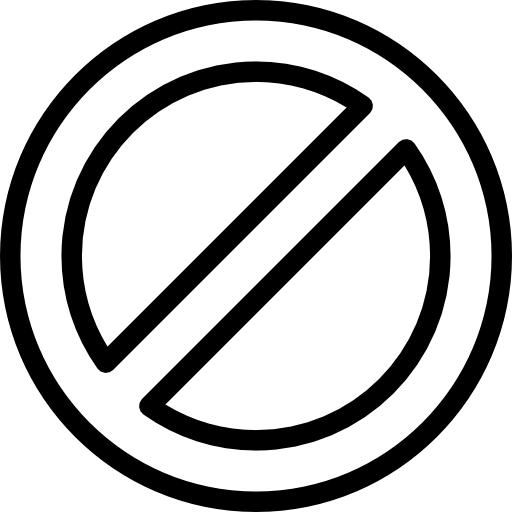
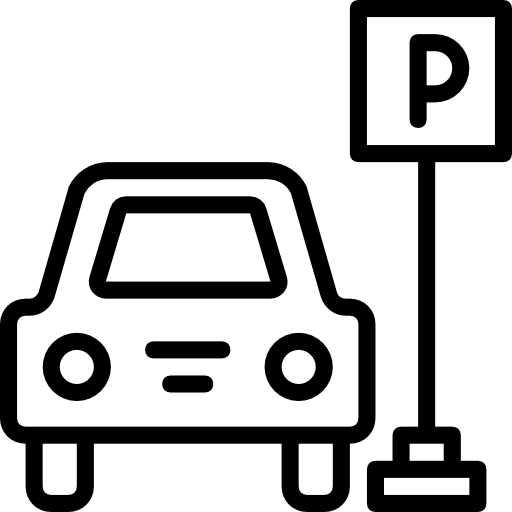

건물 내방객에 대한 친절한 안내와 절도 있는 동작을 유지하며, 입주민들의 안전활동보장과 도난사고예방을 함으로써 고객사의 자산을 안전하게 지켜드립니다.

보안근무

출입관리
순찰관리
안전관리
리더십교육

주차관리
업무인수인계
1.경비반장 주관 2.특별사항 발생시 상황파악 및 “갑”측 보고
주요지역 순찰
시설점검 및 이상발생시 연락 (전기, 소방, 화장실, 청소, 누수)
출근/점심/퇴근시간대
시간대별 업무기술 참조
주간근무
1.정기순찰 및 내방객 안내 2.이상유무발생시 즉각조치
야간근무 및 순찰일지
1.건물내외부 시근장치 확인 2.잔류자 확인 3.규정에 따른 순찰진행
근무일지 작성
1.양식에 의거 작성 2.사전조치 후 결과기술
정기방문 및 현장점검 (월:1회이상)
근무현황 점검 및 "갑"측 애로사항 전달